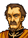

Opening 1

オルトフ司祭
敵はレンスター王国の生き残りだ
それもどうやら指揮官は
マンスターから逃げ出した
リーフ王子らしい
これはただごとではない
俺は、帝国軍の総司令部に
報告せねばならんから
貴公
この要塞に立てこもり
時間をかせいでくれ！

しかし将軍
敵はすでに
要塞の中にまで進入しております
われらだけでは
とうてい
もちこたえることはできませんが・・・
うーむ・・・
やむをえん、最後の手段だ
マーダーホレスを発動せよ
・・・マーダーホレスと・・・
それではわれらに死ねと申されるか・・・
敵をせん滅できれば死ぬこともなかろう
そのかくごは必要だがな
わかりました・・・
ご命令とあらば、やむをえません・・・
牢獄の囚人どもの始末もわすれるなよ
下手に生きのびられると
あとでやっかいなことになる
はっ・・・
ではたのむぞ
貴公らの死は決してムダにはせぬ
・・・・・・
Opening 2 Young Lady Olwen
.png)
おまえ、帝国兵だな！
この悪魔！
ぼくたちを殺しにきたのか！！

・・・ちがうわ
私はとらえられて・・・
あなたたちはどうしてここに？
.png)
村が兵隊におそわれて・・・
むりやり連れてこられたの・・・
あたしたち、一体どうなるの・・・
どうなるって、決まってるさ！
暗黒神の生けにえにされるんだ
バーハラのみやこに送られて
みんな殺される・・・
ぼくのねえちゃんも
連れていかれたまま
帰ってこないもん・・・
そんなのいやよ！
あたし、村に帰りたい・・・
母さんや父さんに会いたい・・・
・・・これが子供狩りなの？
うわさには聞いたことがあったけど
まさか本当にあるなんて・・・
ひどい、ひどすぎる・・・
これが私の信じていた国
フリージのしわざだというの！
おねえちゃん、お願い！
あたしたちを助けて！！
村に返して！！
ええ
大丈夫よ
心配しないで
あなたたちに手出しはさせない
絶対に守ってみせるわ
たとえこの命にかえても・・・
Turn 2 Off his white horse… not a prince, but an adjutant appears

オルエン様！
どこにおられるのです！！
返事をしてください！！
フレッド？
来てくれたのね・・・
こっちよ、子どもたちも一緒なの！！
でも
ケンプフの兵もいるから
油断しないで！！
Enemy turn 30
ふん、命令とはいえ
みすみす死ぬのがわかっていることに
いちいちつきあっていられるか！
司令官に報告せねばならぬことができた
司令官のところに行ってくる

それなら私が・・・
わしでなくてはならぬのだ！
あとはたのんだぞ
・・・・・・
Talk: Leif → Olwen

子どもたちを助けてくれたようだが
きみは？
あなたは？
ぼくはこの軍のリーダーで
・・・リーフという
リーフ？
では
あなたがレンスターのリーフ王子？
私は・・・
私はフリージのマージナイト
オルエンと申します
フリージの？
・・・なのにどうして・・・
何からお話すればよいのか・・・
いろんな事がありすぎて
混乱しているのですが・・・
もし、お許しいただけるのなら
しばらく王子と
ごいっしょさせてくださいませんか？
ぼくはかまわないが・・・
ドリアスやアウグストの意見も
聞かねばならない
戦いが終るまで
待っていてもらえるだろうか
はい
無理をいって申しわけありません
Talk: Fred → Olwen
If Talk: Leif → Olwen has already happened
フレッド
私はこの人たちと
行動をともにすることにしました
だから、あなたは自由に・・・
何をおっしゃいます！
私はオルエン様の副官
オルエン様が
そう決められたのなら
私もそれに従うまでです
フレッド・・・ありがとう
If Talk: Leif → Olwen has not happened yet
オルエン様！
フレッド・・・
ありがとう、助かったわ・・・
ご無事でよかった・・・
早く脱出を・・・どうなされたのです？
お顔の色が真っ青ですよ
フレッド、私たちは
今まで
何のために戦ってきたのかしら・・・
オルエン様、一体何を・・・
私は今まで何をしてきたの？
まだおさない子供たちを
何の罪もない親から奪うことの手助け？
それとも
子供たちをバーハラの都に送って
いけにえにするための手伝い？
オルエン様・・・
・・・今まで
自分がやっていることに
うたがいを持ったことなんてなかった
兄様の背中を
追いかけてさえいれば
まちがいないと思ってた
なのに・・・今はもう、何もわからない！
何も信じられない！
私はいったいどうすれば・・・
・・・一つだけ言えることは
オルエン様のいるべき場所は
帝国軍の中ではないということだけです
オルエン様
私とともにリーフ王子の軍に
加わりましょう
リーフ王子の？
でも、彼らは今までずっと
私たちの敵・・・
・・・私はリーフ王子と面識があります
こころざしは帝国よりも
はるかにわれらに近い
オルエン様が見失われたもの・・・
それを、彼の軍で探しましょう！
・・・わかりました
フレッドがそこまでいうのなら・・・
After seizing
ここでも子どもたちが・・・
ターラ市民が
立ち上がった気持ちがよくわかる

さよう
だからこそ、帝国も必死なのです
もし、ターラを許せば
各地で同じような反乱が起きるでしょう
街一つを完全に叩きつぶすために
各地から軍団が集められています
ゲルプリッターまで
帝都から呼び戻したという
情報もあるくらいなのですから
ゲルプリッター
・・・フリージ家の近衛軍団か
はい
フリージ家一族を中心とする魔法騎士団で
大陸でも１、２を争う精鋭部隊です
指揮官は
雷神と恐れられるイシュタル王女
そして、副官のラインハルト卿も
聖戦士トードの再来と称されるほどの
立派な武人です

子供狩りに手を貸すような男を
『立派』と？
まったく、騎士とは困ったものよ
現実を何一つ知らぬ・・・
アウグスト
その物言いは失礼ではないか！
わしが何を知らぬと言うのだ？
ラインハルトはイシュタル王女の守役
イシュタルはユリウス皇子の愛人
そして、ユリウスは
暗黒神ロプトの化身ともいわれている
つまり
やつらはみんなロプトのしもべ
この世を破壊に導くものではないか・・・
Only if Olwen has joined Leif's army and is alive
ちがいます！
兄は・・・ラインハルト兄様は
ロプトのしもべなどではありません！！
・・・そなたは？
オルエン・・・
ラインハルトの妹です・・・
わけあってわが軍と同行する
ぼくが許したのだ
さようか
ならばその目でしっかりと
見ておくことだ
帝国とはいったいどのようなものか
ということをな
Oltoph: battle quote
ここは通さぬぞ！
くらえ！
Oltoph: defeat quote
フリージに栄光あれ・・・ぐふっ
Oltoph: release quote
これがレンスターの戦いかた？
わしはまちがっていたのかもしれぬ・・・